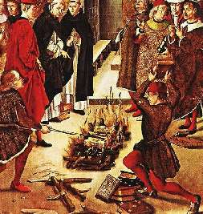
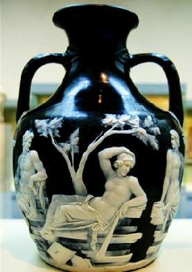

Борис Акунин
Мой календарь
Красоту, конечно, нужно беречь каждый день, она хрупкая. Но сегодня - особенно. Потому что 7 февраля - это такой Шабаш Вандала. В этот день произошло два отвратительных события, одно хуже другого.
В 1497 году религиозный фанатик и кликуша Джироламо Савонарола, на время захвативший власть во Флоренции, устроил Falo delle vanita, «Костер суетности», своего рода аутодафе Красоты. Горожане должны были бросать в огонь всё нарядное, красивое, радующее взор - чтобы искусство не отвлекало грешников от молитвы. В пламя летели светские книги, музыкальные инструменты, картины. Пишут, что бедный, запуганный Сандро Боттичелли бросил в костер несколько своих лучших полотен.
А 7 февраля 1845 года в Британском музее новоявленный герострат (даже не хочу называть имя, пусть оно сгинет) расколошматил вдребезги Портлендскую вазу, которая считалась непревзойденным шедевром античного искусства.
Вазу потом склеивали по кусочкам. Приглядитесь, она вся в шрамах. А когда-то была совершенной.
В общем как только увидите сегодня что-то красивое, сразу берегите его. И, упаси боже, не делайте ничего некрасивого.